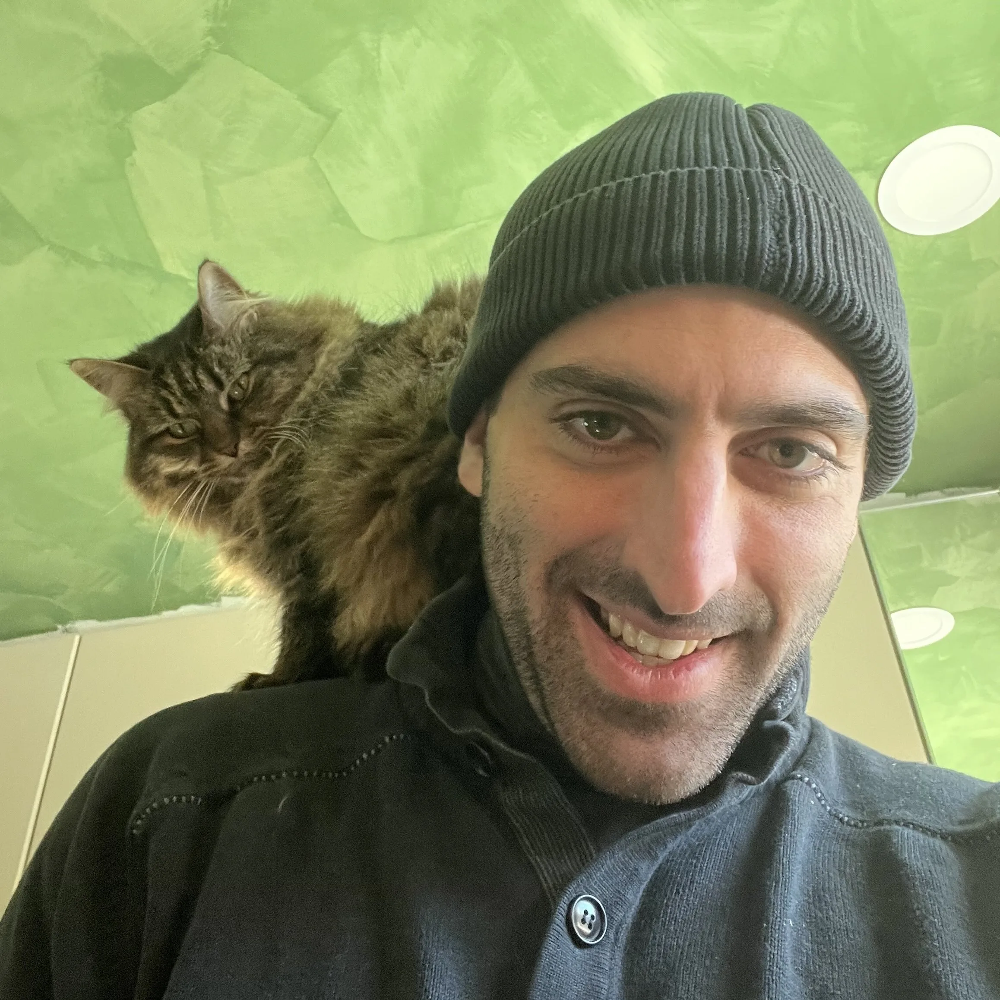
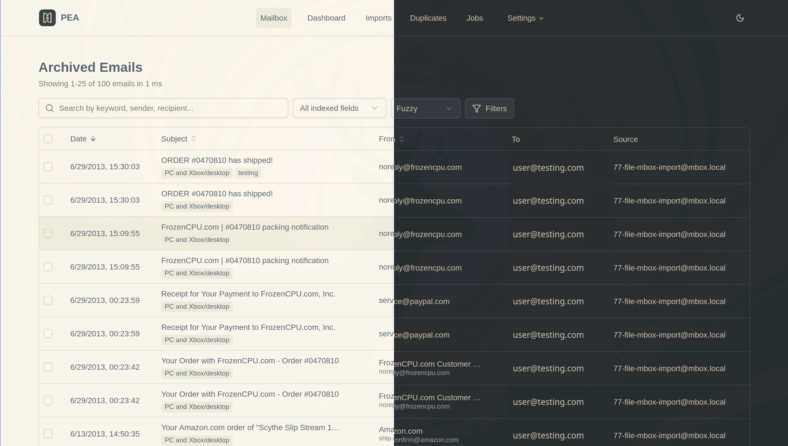
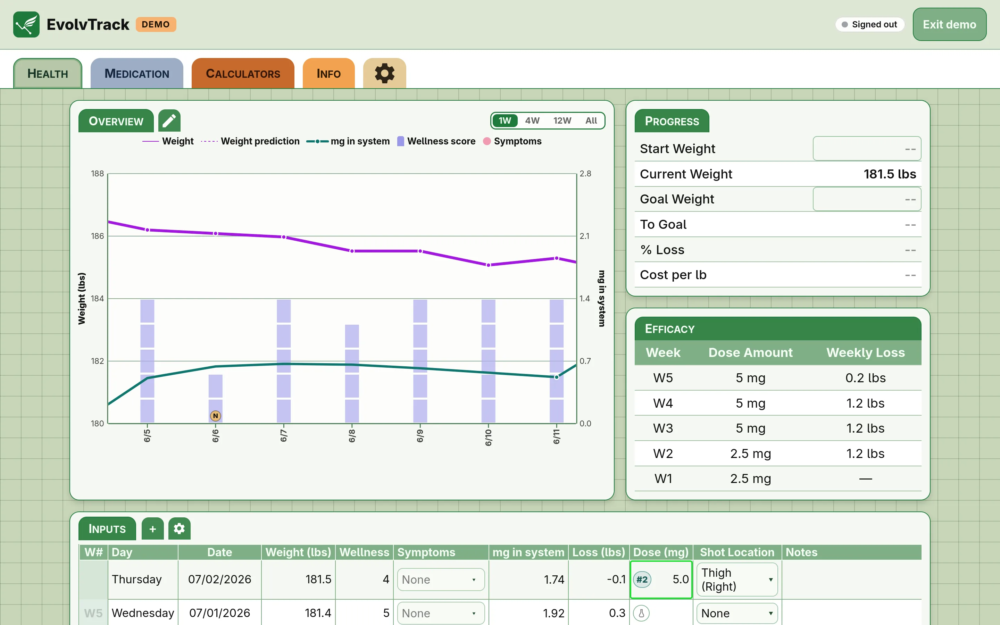
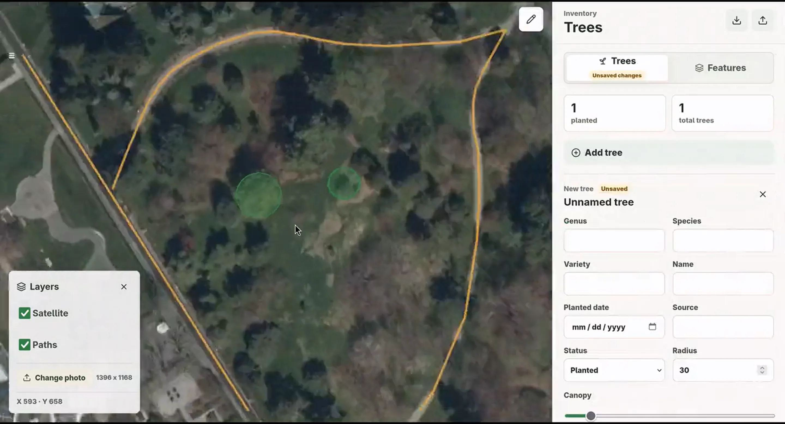
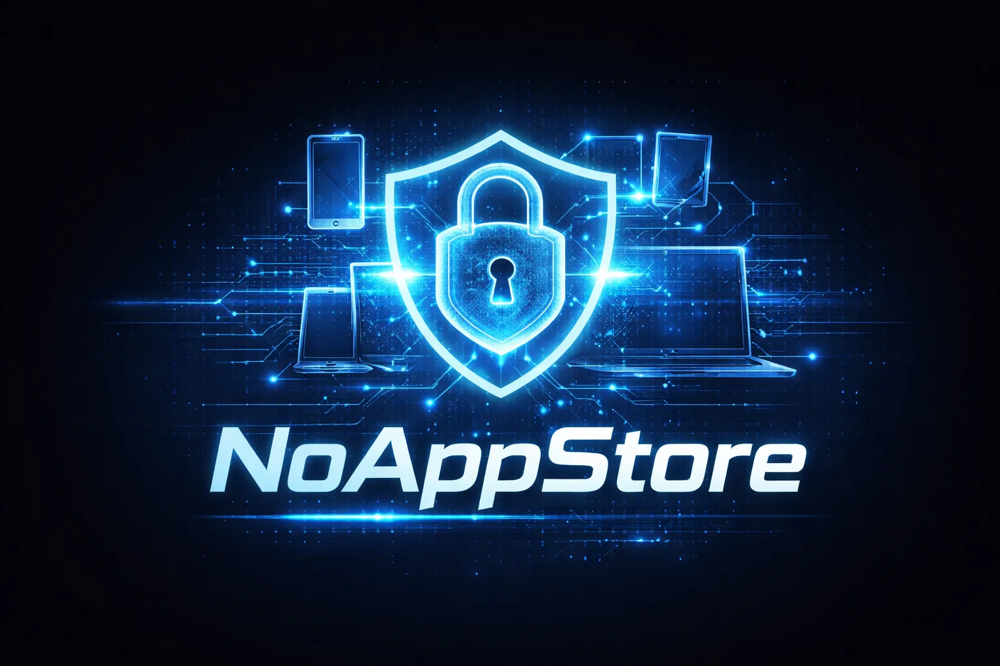
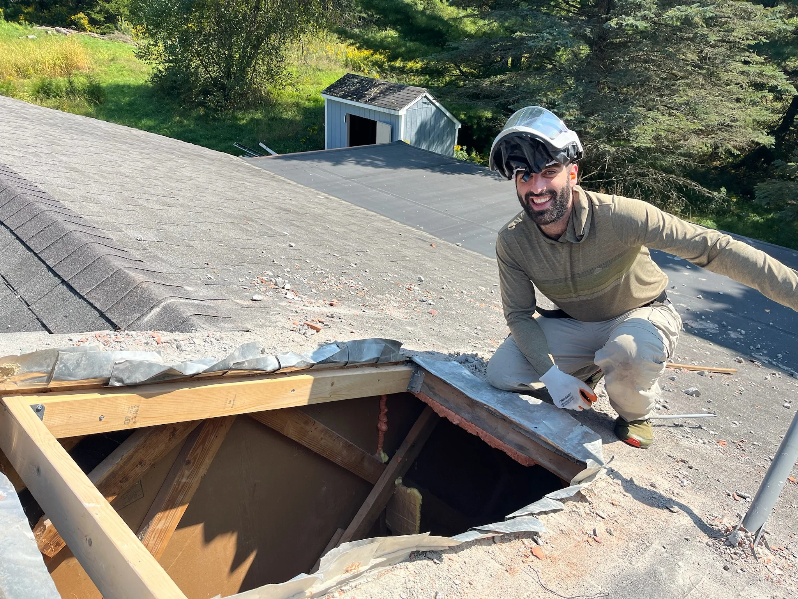
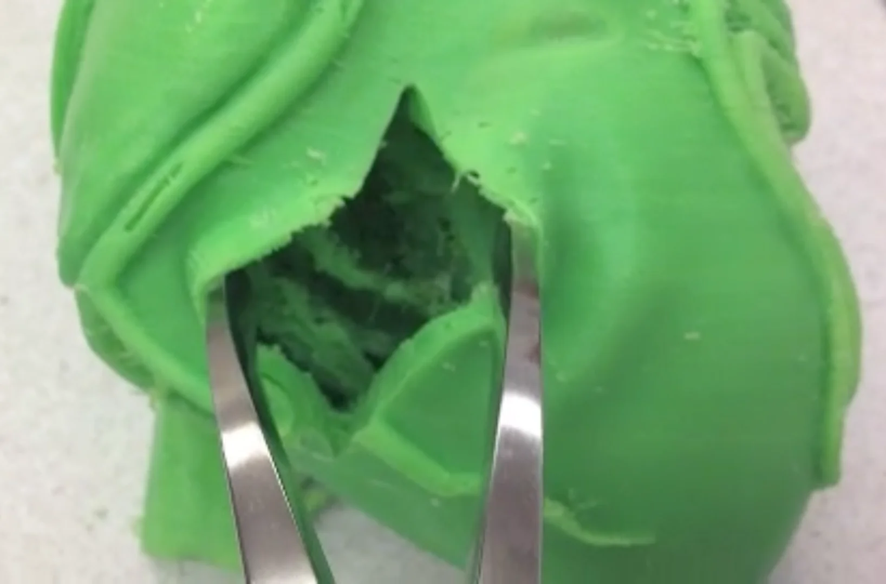
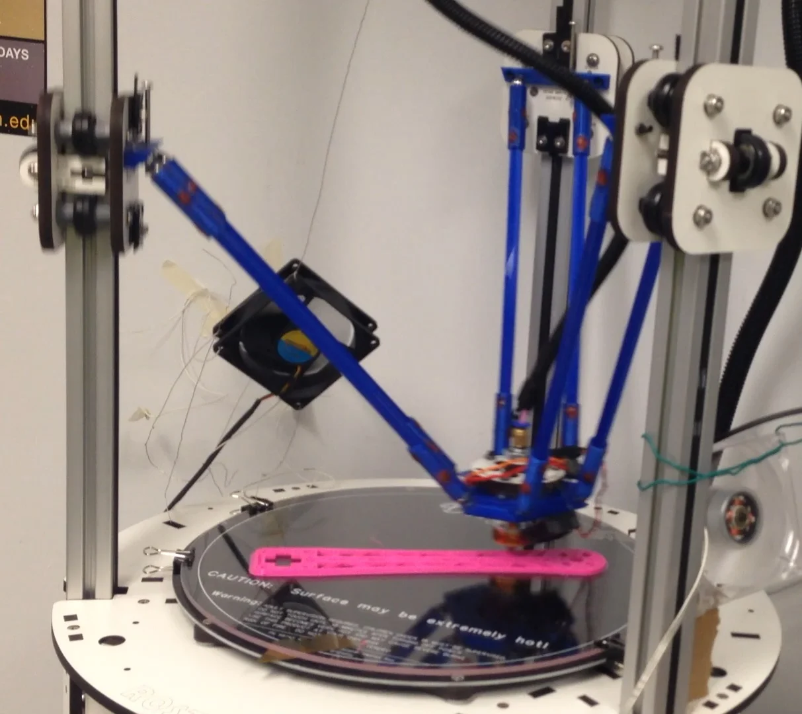

Hi, I'm Glen's website!
Glen is a former Amazon SWE with 10+ years of professional experience
He started his career in 3D printing, but after spending more and more time tinkering with firmware and printer hosts he moved into software development. First in contract roles, then full time at Zippity, as part of a two person dev team. From there he spent 4 years at Amazon working to internalize their HR software. He then left, intending to renovate his home full time, but ended up contracting with local businesses to digitize and automate back of house workflows. With the home renovation winding down and running out of local businesses to help, he's looking for a new full time role.

Personal Email Archive
Glen forked Open Archiver, an open-source email archiving platform geared toward compliance, and reworked it into a desktop app geared toward personal use. It's lighter weight, and meant to make it easy move emails out of the cloud and out of mail clients with poor searchability. It downloads and sanitizes remote content, allowing emails to render correctly without relying on external resources that may shutdown.
Instead of running on docker, it's a single Rust binary that runs the Tauri v2 desktop app and the backend engine. The frontend is SvelteKit, and the DB is SQLite with FTS5.
Check out the repo on
GitHub.

EvolvTrack
EvolvTrack is an installable PWA Glen built for tracking GLP1 and GIP medications and keeping weight, medication, and wellness trends in one
dashboard. App can sync using E2EE or be used completely offline. It uses Svelte + IndexedDB via Dexie for running locally and Supabase for cloud sync. The input tables offer a spreadsheet-like editing with accessibility in mind. If you're a GLP1 company, Glen would be a huge asset.
Check out the
live demo.

treeMap
Every sign Glen planted next to a tree in his yard got destroyed by nature, so he built a local-first
yard map. Upload an aerial photo of the yard, then mark paths, landmarks, and tree locations
with notes on each.
It's self-hostable, runs on Node's built-in SQLite, and ships with a one-line systemd/nginx installer
for running it privately on a home network.
Source on GitHub.

NoAppStore
Glen launched an app for a client who wanted an E2EE cross platform app, that wouldn't require an app store. He chose to make a PWA and has been given permission to post a barebones template on his GitHub.

Home Renovation
Glen and his wife moved into a house in disrepair during COVID.
Contractors in the area were booked out for a couple years and
material prices were spiking. They decided to wait for materials
cost to come down and do the work ourselves.
The renovation has taken the home down to the studs, and beyond, where the studs were rotted out. Surprisingly similar to
upgrading legacy software...

Dissectables
Glen was the principal investigator for an NSF research grant. Glen and his team
were assessing the viability of producing surgical simulations
using inexpensive FFF printing methods.
This required he design a printer that could easily swap out
large experimental extruders in order to print with cutting edge
filaments that were not useable by any off the shelf printers.
Glen spent most of his time modifying hardware, debugging firmware, testing new materials, but he also worked to translate medical training requirements into engineering constraints and this is when he learned that hearts have tendons, and that he did not have the constitution to be in a cadaver lab.

OC3D
After supporting faculty-led 3D printing projects at Oberlin and Case Western Reserve School of Medicine, Glen was asked to establish Oberlin’s first 3D printing lab. He founded the lab from the ground up, selecting and setting up printers, creating workflows for student and faculty use, holding open hours, and teaching a Winter Term course focused on hands-on fabrication. Under his guidance, students moved from learning the basics of 3D printing to building printers of their own, including a ceramic printer alongside a wide range of experimental projects.

Relevant work history.
A summary of Glen's career.
- Built consumer-grade streaming UIs for real-time, token-by-token LLM responses across web and mobile, profiling and tuning client-side rendering for smooth output, and integrating multimodal pipelines (Whisper STT, ElevenLabs TTS) for conversational interfaces
- Designed LLM evaluation frameworks covering A/B prompt testing, regression checks, and error analysis to drive measurable improvements in response quality and reliability
- Set up frontend platform foundations across client projects: shared component patterns in React/TypeScript, Vite/Vitest build and test configuration, and CI/CD pipelines via GitHub Actions that took new projects from local dev to deployed in under a day
- Built a reusable SvelteKit PWA scaffold for a client engagement: Convex BFF backend, end-to-end encryption, Vitest test infrastructure, and an automated GitHub Actions pipeline deploying to GitHub Pages with custom domain routing
- Led 4 engineers across 4 concurrent client projects, translating business requirements into system designs and shipping production workflows end-to-end
- Led design and launch of the front-end platform for Amazon's internal mobility product, standardizing the global transfer process for 2M+ employees and increasing application completion rates from 10% to 90%
- Built an accessible React component library adopted by multiple teams, establishing shared UI patterns, prop interfaces, and documentation that reduced duplicated frontend work across the organization
- Partnered with the backend lead to shape the BFF API layer powering the React front-end, advising on SLAs, data shaping, and performance tradeoffs, and personally authoring several endpoints
- Established testing and observability foundations (Cypress E2E suites, Jest unit coverage, and CloudWatch metrics dashboards) that improved release confidence and reduced on-call response time
- Architected microservices on AWS (Lambda, API Gateway, DynamoDB) defined in CDK, enabling clean team splits as the project scaled; mentored engineers and drove cross-team system design decisions across the frontend/backend boundary
- Built and operated APIs vending PII and highly confidential HR data to hundreds of internal applications globally, including on-call ownership and production incident response
- Delivered backend services for a multi-year enterprise migration of Amazon's internal HR system
- Within first two months of hire, rewrote and patched the internal permissions application; proposed a follow-on roadmap accepted and assigned to a sibling team
- Led an offshore engineering team in Hyderabad through code review, pair programming, and roadmap planning to land a clean handoff of the critical permissions application
- One of two engineers responsible for all production systems; launched four React applications: admin dashboard, technician app, customer app, and kiosk system
- Migrated backend infrastructure from Google Datastore to Heroku Postgres, improving query performance and maintainability
- Partnered with C-suite on product roadmap and system design decisions
- Built PCI-compliant payment processing workflows
- Designed and deployed a Flask/Postgres web portal for students, faculty, and parents, backed by REST APIs on AWS
- Oversaw contractors building mobile clients
- Principal investigator on an NSF/SBIR Phase I grant researching FFF printing, achieving proof of concept surgical simulation
- Designed and built the FFF 3D printers that supported the research
- Managed a multidisciplinary team of designers, engineers, and scientists
- After consulting for several professors at Oberlin College and Case Western Reserve School of Medicine, was invited to lead the creation of Oberlin's first 3D printlab, serving the student body and local community
- Taught CAD and prototyping classes
Skills
Frontend & Platform
BFF & Backend
Infrastructure & DevEx
Databases
AI / LLMs
Education
Academic foundation with focused coursework in computer science and mobile development.
Oberlin College
Relevant Coursework
- Principles of Computer Science I (Java)
- Principles of Computer Science II (Java)
- Developing Android Apps
- Android Fundamentals